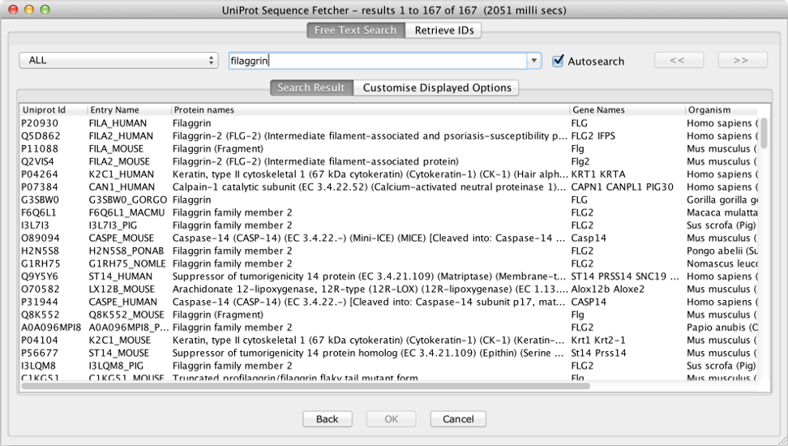

~/.jalview_properties file with the label CACHE.UNIPROT_FTS. If you want to transfer them to the new API search then copy the values to the CACHE.UNIPROT_2022_FTS label (or rename the existing label if the new one does not exist) (see the UniProtKB query fields page).
[1 TO 100] or [2020-01-01 TO 2022-07-26] although a * wildcard can be used for half-open ranges, e.g.[2020-01-01 TO *]. See the UniProtKB query fields page for more examples.
To open the UniProt Sequence Fetcher, select UniProt as the database from any Sequence Fetcher dialog (opened via "File →Fetch Sequences").

Searching the UniProt Database
To search UniProt, simply begin typing in the text box. If the 'autosearch' check box is enabled, then after a short delay (about 1.5 seconds), results will be shown in the table below. Results are also updated whenever you press Enter, and you can access previous searches by pressing the 'Down' arrow or clicking the drop-down menu icon at the side of the search box.
You can sort results by clicking on the displayed columns, and select entries with the mouse or keyboard. Once you have selected one or more entries, hit the OK button to retrieve the sequences.
human antigen |
All entries containing both terms. |
human AND antigen |
|
human && antigen |
|
"human antigen" |
All entries containing both terms in the exact order. |
human -antigen |
All entries containing the term human
but not antigen.
|
human NOT antigen |
|
human ! antigen |
|
human OR mouse |
All entries containing either term. |
human || mouse |
|
antigen AND (human OR mouse) |
Using parentheses to override boolean precedence rules. |
anti* |
All entries containing terms starting with anti.
Asterisks can also be used at the beginning and within
terms. Note: Terms starting with an
asterisk or a single letter followed by an asterisk can slow
down queries considerably.
|
author:Tiger* |
Citations that have an author whose name starts with
Tiger. To search in a specific field of a
dataset, you must prefix your search term with the field
name and a colon. To discover what fields can be queried
explicitly, observe the query hints that are shown after
submitting a query or use the query builder (see below).
|
length:[100 TO *] |
All entries with a sequence of at least 100 amino acids. |
(lit_author:Arai) AND (lit_author:Chung) |
All entries with a publication that was coauthored by two specific authors. |
Result pagination
The query results returned from the UniProt server are paginated for performance optimisation. The button labelled ' << ' and ' >> ' can be used to navigate to the next or previous result page respectively. The page range is shown on the title bar of the Free Text Search interface. Jalview's pagination implementation supports multiple selection of entries across multiple pages.Customising The UniProt Sequence Fetcher
To change the displayed meta-data in the search result, click the 'Customise Displayed Options' tab, and select the fields you'd like to be displayed or removed.
The UniProt Free Test Search Interface was introduced in Jalview 2.10.0 and updated to the July 2022 API in Jalview 2.11.2.4